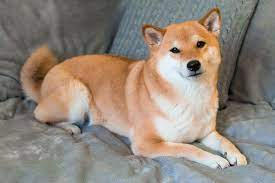
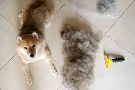

A Shiba Inu laying down. Cr: Elena Shvetkova / Getty Images
Breed:
Shiba Inu
Country of Origin:
Japan
Average Life Span:
12-16 years
Average weight (Adult Male):
17-23 lbs (7-10 kg)
Average height (Adult Male):
13-17 months (33-43 cm)
Price (in total):
$1400-2000
The Shiba Inu, also known on the internet as the “doge” or the “shibe”, is a treasured traditional Japanese breed of dog, originally bred to hunt small prey. Now, they have mostly retired from chasing wild prey in the woods, and have taken a liking to the comfort of air-conditioned rooms and fluffy dog beds inside their owners’ residence, often found curled up in the shape of a croissant.
Shiba Inus have a strong personality, and are not afraid to voice their opinions using their howls. I would sometimes even question if my Shiba Inu secretly has the soul of a Husky for the frequency and volume of his howling at every given chance.
Shiba Inus may be loud, but they have a very pretty appearance that is not silenced by their loud voice. Their ears are pointy and prick, and their faces resemble much of a fox, with squinty eyes and a narrow snout. Shiba Inus are also known for their expressive “eyebrows” — the lighter patch of fur above their eyes often in a pointed oval shape, and their curled tails that are wide and fluffy. Shiba Inus are double coated, which enables them to stay cool during the humid summer months and warm during the snowy winter months in Japan. There are four main coat colors that Shiba Inus may have: black and tan, red, cream, and sesame.
Shiba Inus are wonderful companion dogs, known to be incredibly gentle around small children and babies. They are very loyal and devoted to their family, sometimes maybe too headstrong for their own good, as they will pick fights with much larger and stronger breeds to protect their owners or companions. Shiba Inus are not the smartest breed when it comes to obedience intelligence, but they are intelligent in their own way; they are quick to learn from their mistakes, and their instinct with hunting is one of the best among popular dog breeds.
Strengths
Shiba Inus are very well-suited for apartment living, which partially explains the popularity in Asian countries, since apartment buildings are more common than single-family houses. Shiba Inus are considered medium-sized dogs, not too big or too small, so they would not feel cramped or suffocated in a smaller living area like an apartment.
Shiba Inus are generally low maintenance when it comes to grooming; they generally shed twice a year, from their summer coat to winter coat and vice versa. While brushing their fur regularly helps reduce the severity of shedding throughout the year, there is minimal concern about matting of their fur since the length is generally short or medium. Daily brushing is not necessary, but regular brushing of their fur, especially during weather changes, will help their fur shed in a controlled manner. They also have minimal to no drooling and slopper, which is beneficial if you are not keen with the idea of having a wet spot on your skin or your clothing every time your puppy comes to greet you.
Shiba Inu with its shedding hair Cr: myfirstshiba.com
Shiba Inus are fairly independent and reserved creatures, their temperament is similar to a cat: they do fairly well being left alone at times, and would not mind some love and affection from their owners every so often. This makes the Shiba Inu a well-suited pet for someone who has a busier schedule, since Shiba Inus will not demand attention from you at every waking moment.
While it is inevitable that the older dogs get, the more health issues may arise, Shiba Inus generally have minimal health problems during their lifespan. They do not have any serious underlying issues related to the build of their breed that requires any special diet or attention from their owners.
Weaknesses
Since they are cunning and agile, Shiba Inus are master prison escapees. They will find a way to escape from their confinements when they are under-stimulated and bored in their environment, so it is wise to always keep a collar and tag on your Shiba in case it evers tries to escape from your home. A natural hunter, Shiba Inus are very prey-driven, and are likely to run after any small animal once they set sight on it; it is important to keep Shiba Inus on a leash at all times to prevent accidents and escapes.
Given their tendency to shed, Shiba Inus are not hypoallergenic and tend to cause some degree of allergic reaction. It is not uncommon for the allergic reactions to be more intense during changes between their coats.
Being one of the most stubborn dogs, Shiba Inus are smart, but not the best at performing tricks and commands. They tend to perform to their own accord; if they want to obey your commands, they will; if they do not feel like performing the trick, they will do everything but that. This trait of Shiba Inus makes them really hard to train, especially with recalling while off-leash.
While the Shiba Inu is considered a medium-sized dog, they are a big ball off energy that needs to have an outlet of release in order to protect the integrity of your furniture and sanity of your mind. While Shiba Inus can be independent and left alone for periods of time, once they decide that they want attention and to play with their owners, there is no stopping this whirlpool of energy until you tire them out after a couple hours of play and exercise time. This may be an issue for owners who may not have easy access for their Shiba Inu to expend their energy, and as a result, destruction within their homes may be inevitable.
Shiba Inus, while rising in popularity amongst dog owners across the globe, may not be the best dog to get if it is your first ever pup. The Shiba Inu may be a relatively low-maintenance, calm and intelligent dog, but without proper socialization and preparation for all the small issues that may come with owning the puppy, both your and the dog’s lives may be more troublesome than needed. Proper and consistent training has to be in place to establish a sense of dominance over the Shiba Inu for them to obey your commands, and you have to be prepared to deal with some level of tantrums and howling along the way. Shiba Inus are wonderful pets, but it would be so much more wonderful if you had already had experience with owning a dog prior to obtaining the “doge”.
As always, it is better to adopt than to shop when it comes to pets, since the cost is significantly lower than purchasing from a breeder, and a needed pup will be given a chance to a loving home. Dogs from the shelter would also be more likely to be potty-trained, and socialized properly prior to being taken home, which would also make your journey with your Shiba Inu so much better. All in all, Shiba Inus are a great pet, that require a substantial amount of training and care, before being able to reap the benefits of this intelligent and independent puppy.